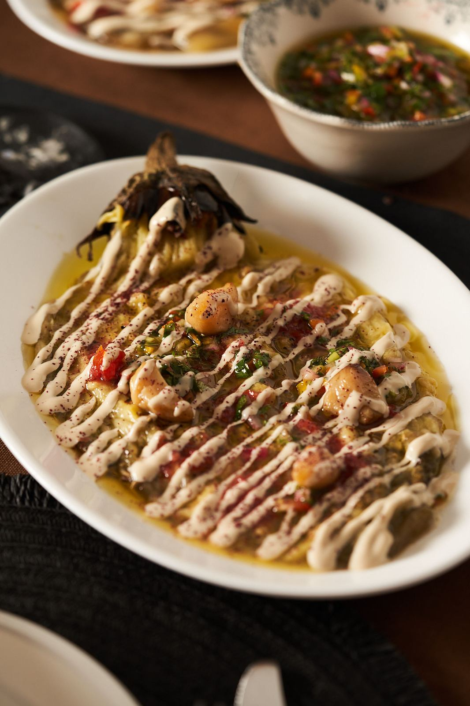

אלרגיות, צמחונות וכשרות: מה לספר לשף לפני הארוחה

כמעט בכל שולחן יש מישהו שלא אוכל משהו. אלרגיה לאגוזים, רגישות לגלוטן, אורחת צמחונית או בני משפחה ששומרים כשרות. בארוחת שף זה לא בעיה, בתנאי אחד: שהשף יודע על זה מראש.
ספרו על כל אלרגיה, רגישות או העדפה כבר בשיחה הראשונה, גם אם היא נראית קטנה, וציינו כמה אורחים זה נוגע להם. כך אפשר לבנות תפריט שכולם אוכלים ממנו, במקום מנה חלופית ברגע האחרון. בכשרות, שאלו מראש ובמפורש מה השף יכול להתחייב אליו.
למה לספר כבר בשיחה הראשונה?
כי התפריט נבנה מההתחלה. כשהשף יודע מראש שיש צמחונים סביב השולחן, הוא יכול לבנות מנות שכולם אוכלים מהן, במקום להוסיף מנה חלופית אחת ברגע האחרון. וכשמדובר באלרגיה, הידיעה המוקדמת משנה גם את הקנייה, את ההכנה ואת סדר העבודה במטבח.
מה בדיוק לספר לשף?
| נושא | מה חשוב לציין |
|---|---|
| אלרגיות | למה בדיוק, כמה היא חמורה, והאם גם מגע או שאריות מסוכנים. |
| רגישויות | גלוטן, לקטוז או כל דבר אחר שגורם אי נוחות. |
| תזונה | צמחונים, טבעונים, מי שלא אוכל דגים או פירות ים. |
| כשרות | מה בדיוק נדרש: חומרי גלם כשרים, הפרדה בין בשר לחלב, או יותר. |
| טעם | מה פשוט לא אוהבים, גם אם זה "רק" כוסברה. |
ותמיד ציינו כמה אורחים זה נוגע להם. אורח צמחוני אחד מתוך עשרים ושולחן שחצי ממנו צמחוני הם שני תפריטים שונים.
אלרגיה או העדפה: למה ההבדל חשוב?
העדפה אומרת "אל תשים לי את זה בצלחת". אלרגיה אומרת "אסור שזה יגיע לצלחת, גם לא בכמות קטנה". ההבדל הזה משנה את כל העבודה במטבח: קרשים וסכינים נפרדים, סדר הכנה, ולפעמים ויתור על מרכיב לכל השולחן. לכן חשוב לדייק, ולא לכתוב "אלרגיה" כשמתכוונים ל"לא אוהב", וגם לא להפך.
איך נראה תפריט כשחלק מהאורחים צמחונים?
הכי טוב כשהמנות הצמחוניות הן חלק מהלב של התפריט, ולא תוספת בצד. חציל שרוף עם טחינה ועגבניות, לחמים חמים, סלט קצוץ צבעוני - מנות כאלה, שמופיעות גם בגלריה מהערבים של ליאב, הן מנות שכל השולחן אוכל מהן בשמחה, לא רק הצמחונים. כשהתפריט בנוי ככה, אף אחד לא מרגיש שהוא מקבל "את המנה המיוחדת".
ומה לגבי כשרות?
כשרות היא לא מילה אחת. יש מי שמסתפק בחומרי גלם כשרים ובלי לערבב בשר וחלב, ויש מי שצריך מטבח כשר וכלים כשרים. לכן אל תניחו שום דבר מראש: שאלו את השף במפורש מה הוא יכול להתחייב אליו, וזכרו שבארוחה בבית שלכם, גם המטבח והכלים שלכם הם חלק מהתמונה.
איך מוודאים שהכול בסדר ביום עצמו?
- חזרו על הרשימה בהודעה כמה ימים לפני הארוחה.
- אם יש אלרגיה חמורה, ספרו גם לאורח עצמו מה יוגש, כדי שירגיש בטוח.
- אם מגיע אורח שלא ידעתם עליו, עדכנו מיד. עדיף מוקדם מאשר ליד השולחן.
לעוד שאלות לפני שמזמינים, ראו גם איך עובדת ארוחת שף בבית.
שאלות נפוצות
השף יכול להכין מנה נפרדת לאורח אחד?
את זה בודקים בשיחה הראשונה. ככל שיודעים מוקדם יותר, קל יותר להתאים את התפריט, ולפעמים אפשר לבנות אותו כך שרוב המנות מתאימות לכל השולחן.
שף פרטי יכול לבשל כשר?
תלוי בשף ובמטבח. שאלו במפורש מה הוא יכול להתחייב אליו: חומרי גלם כשרים, הפרדה בין בשר לחלב או מטבח כשר, וזכרו שבבית שלכם גם המטבח והכלים שלכם הם חלק מהתמונה.